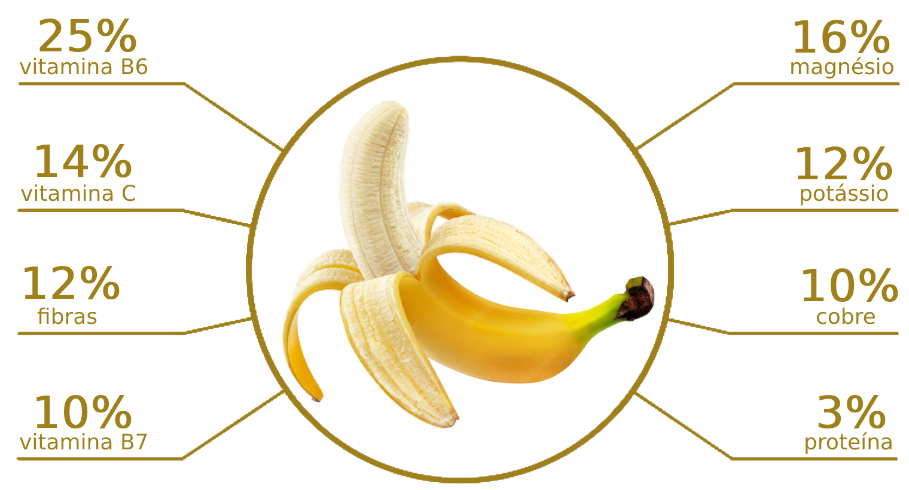

Saúde acima de tudo
Doce, macia, e extremamente saborosa, a banana é um fruto que conquista qualquer paladar, além de proporcionar inúmeros benefícios à saúde, pois ela é rica em fibras nutrientes e vitaminas.
E por falar em vitaminas...
A vitamina de banana é bastante nutritiva, cremosa e deliciosa!
"Rica em diversos nutrientes, a união leite + banana potencializa o organismo e dá mais ânimo e disposição ao dia a dia!"
Para todos os gostos!

Em diferentes cores e sabores, certamente existe uma banana que atenderá ao seu paladar!
Mas, e aí, o que é mais importante para você: cor ou sabor?
"TANTO FAZ!"
A variedade de bananas te permite escolher OS DOIS!
Banana Amarela
É a mais tradicional, e conta com uma grande variedade de tipos e sabores.
Uma delícia!
Banana Verde
Com sabor suave, pode ser consumida crua ou cozida, e traz inúmeros benefícios para a saúde.
Banana Vermelha
A mais rara de todas, tem sabor adocicado e textura cremosa.
Vale a pena experimentar.
Prepare deliciosos pratos utilizando bananas.
Por ser uma fruta extremamente versátil, a banana pode ser utilizada na preparação de diversas receitas deliciosas.